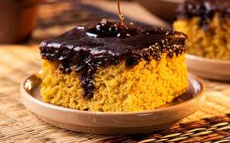
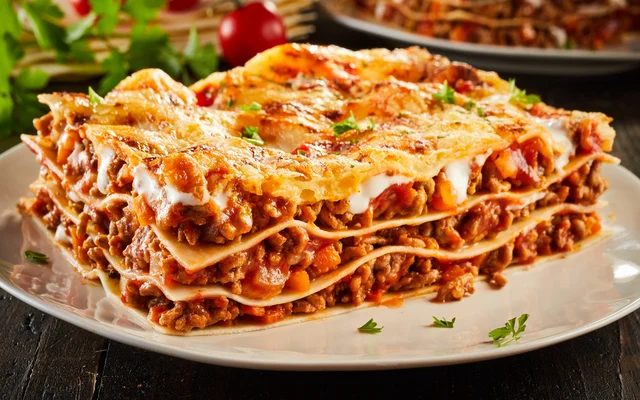
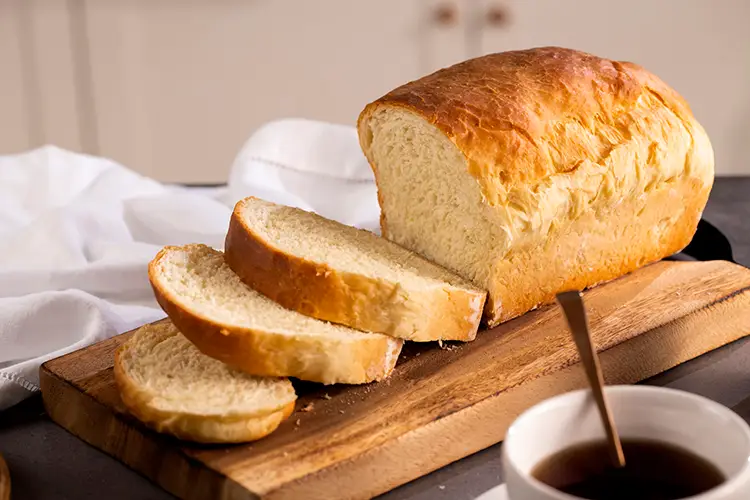
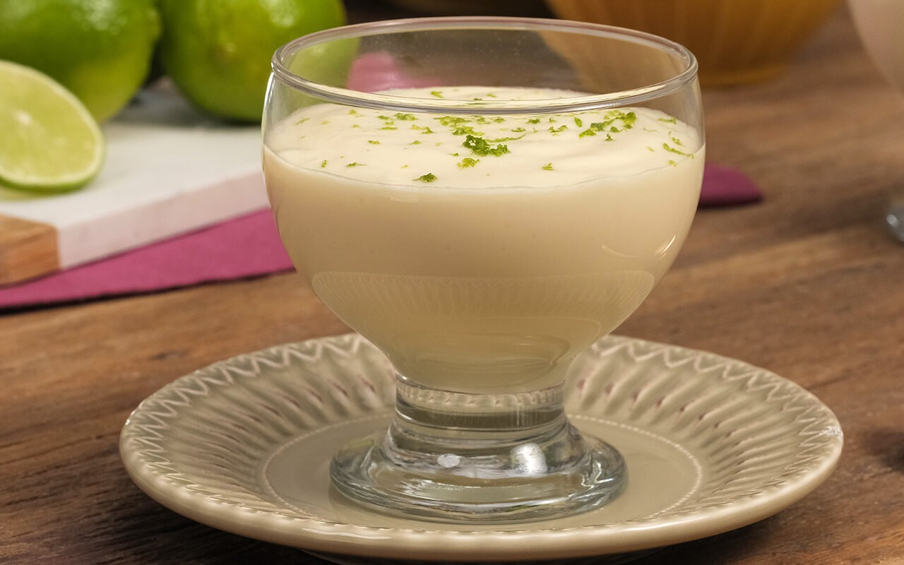

Bolo de Cenoura
Massa fofinha e cobertura de chocolate com aquela casquinha crocante inesquecível.

Massa fofinha e cobertura de chocolate com aquela casquinha crocante inesquecível.

A tradicional receita italiana com molho à bolonhesa caseiro e muito queijo gratinado.

Não precisa sovar! Receita rápida que garante um pão quentinho para o café da tarde.

Sobremesa super refrescante, pronta em 10 minutos e com pouquíssimas calorias.